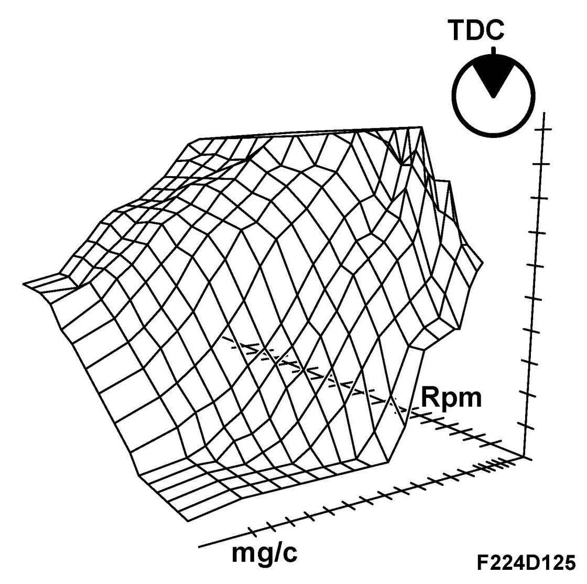
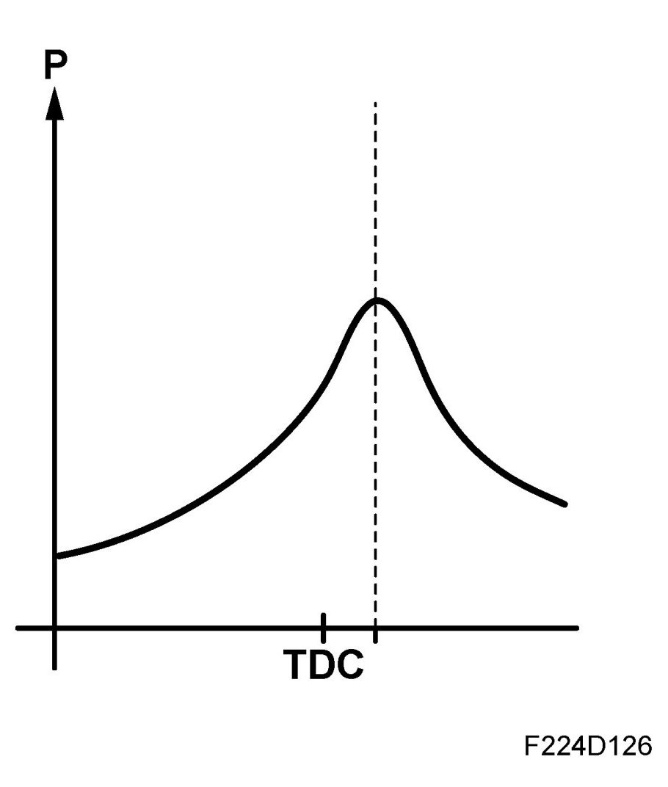

Normal Ignition Timing
Normal Ignition Timing
General, ignition


This ignition function is the one normally used when driving.
The ignition timing is regulated depending on the engine load and speed (air mass per combustion mg/c). The objective of this ignition regulation is to obtain the correct combustion pressure buildup.
The combustion pressure should normally attain its maximum value at around 16-17 degrees ATDC. In order to achieve this, the fuel/air mixture must ignite slightly earlier. Normal ignition timing at 2000 rpm, light load, can be around 25-28 degrees BTDC so that the igniting flame has time to expand and allow the pressure in the cylinder to reach its maximum at the correct point in time.
The expansion rate of the flame varies with the conditions in the combustion chamber, heat, pressure and turbulence. The ignition timing must therefore vary over the engine's load/speed range.
Principle, increasing engine speed
The principle is that the degree of advanced ignition must increase as the engine speed increases or the combustion pressure will build up too late. This would result in poor engine efficiency and exhaust temperature.
Premature ignition of the fuel/air mixture would give a premature pressure build-up, resulting in lower output and increased knocking sensitivity.
Principle, increasing load
With increasing load (air mass/combustion), the pressure, temperature and turbulence in the cylinders will also increase, as will the combustion rate.
Normal ignition timing at 2000 rpm and wide open throttle can be around 5-6 degrees BTDC, compared with 25-28 degrees with a light load at the same speed.
The difference in ignition timing is reflected in the difference in combustion rate between high engine loads and low engine loads. Consequently, the ignition timing must be retarded at high engine loads.
Optimization
A matrix (map, kennfeldt) in the control module memory contains the ignition timing for each respective load and engine speed.
Ignition timing is optimized to obtain the best torque at the current operating point, which also coincides with the best efficiency and therefore best fuel economy.
Normal ignition timing that is the basis for ignition timing control when driving must occasionally be compensated to a slightly more advanced or retarded ignition timing due to other factors than just load and engine speed.
Ignition, BioPower
Different ignition timings are required with ethanol mixture due to the different properties of ethanol as fuel. For this reason, a further matrix has been added for ignition timing with E85 operation.
With an adapted ethanol content of 0-5% the table for petrol operation is used, while at 80-85% the new table for E85 is used. With an ethanol content between 5-80% the torque varies steplessly between the two tables.
The high octane rating in ethanol enables the additional use of slightly advanced ignition in many operational cases. This results in an improved combustion efficiency and lower exhaust temperature. The increased combustion efficiency means that the increase in fuel consumption is not so high with high ethanol content. The lower exhaust temperature means that fuel enrichment is not required at high engine speeds.